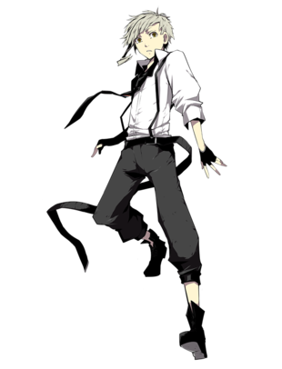
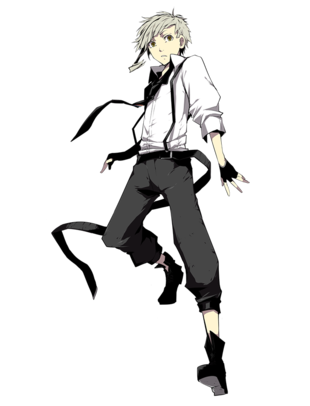
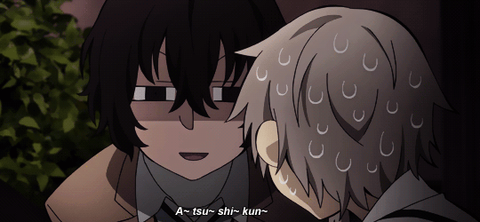

ATSUSHI NAKAJIMA
 

Nakajima Atsushi es el protagonista de Bungou Stray Dogs y un miembro activo de la Agencia De Detectives
Luego de ser expulsado de su orfanato tras cumplir 18 años, Atsushi se vera obligado a vivir en las calles de Yakohama sin suministros. Hasta que un día se encuentra con Dazai Osamu, el cual le invita a comer chazuke como recompensa por salvarlo de la muerte. Este hecho hará que Atsushi se vea involucrado en el caso de un "tigre come hombres" que merodea en luna llena por las calles de Yakohama.
Despues de esperar junto a Dazai en un almacen abandonado se revela que Atsushi tiene la habilidad de convertirse en un tigre pero no puede controlar su poder ni recordar sus transformaciones.Gracias a la habilidad de Dazai Osamu ("Ningen Shikkaku"), Atsushi logra desactivar su poder y conocer su identidad como el tigre blanco.
HABILIDADES
Atsushi tiene la capacidad de transformarse en un tigre blanco a la luz de la luna llena. Esta habilidad le ha traido problemas desde que era un niño en un orfanato, lugar donde fue torturado y utilizado para experimentos liderados por Tatsuhiko Shibusawa, como se revela en la pelicula "Bungou Stray Dogs Dead Apple"
Luego de entrar a la Agencia De Detectives Atsushi logra tener más control sobre su poder y desde ahora tendra la capacidad de transformar ciertas partes de su cuerpo en partes del tigre. Llegando desde sus brazos y piernas hasta incluso sus ojos y uñas (como se muestra a finales de la temporada 3)

RELACIONES
DAZAI OSAMU
Dazai Osamu es aquel que recomendo a Atsushi a la Agencia de Detectives,le dio un lugar para vivir, le dio comida despues de que Atsushi estuviera a punto de morir de inición.Fue su compañero junto a Kunikida, para su examen de ingreso a la Agencia. Dazai es un mentor para Atsushi, le ha dado muchos consejos sobre como afrontar su pasado y como ser más fuerte para luchar contra los problemas del futuro. Atsushi admira mucho a Dazai a pesar de que siempre se ve envuelto en sus bromas e intentos fallidos de suicidio.

AKUTAGAWA RYUNOSUKE
Akutagawa es lo que podria identificar como el archienemigo y contrario de Atsushi desde sus ideales, hasta sus personalidades, Han tenido más de una pelea pero tambien han tenido que trabajar juntos en mas de una ocasion (por ejemplo a finales de la temporada 3). Una de las razones por las que Akutagawa odia a Atsushi es por que este si se ganó la admiración de Dazai, cosa que Akutagawa nunca habia logrado, otra razón por la que lo odia es porque este ve a Atsushi como alguin debil que no puede hacer nada por su cuenta. Aun con todo esto ambos generaron un acuerdo el cual es que pelearian nuevamente en 6 meses si Atsushi se volvia más fuerte y Akutagawa no asesinaba a nadie.
DOPPO KUNIKIDA
A pesar de que Kunikida no estaba de acuerdo con que Atsushi se uniera a la agencia de detectives debido a que lo veia como un niño lloron e inutil que solo se metia en problemas que afectarian a los demás, Kunikida termina acepttandolo como un miembro más de la agencia e incluso lo ayuda a mejorar sus habilidades y aunque no parezca Kunikida se preocupa mucho por Atsushi